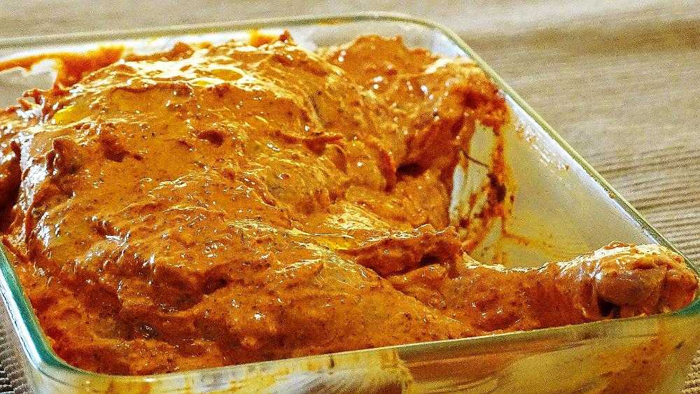
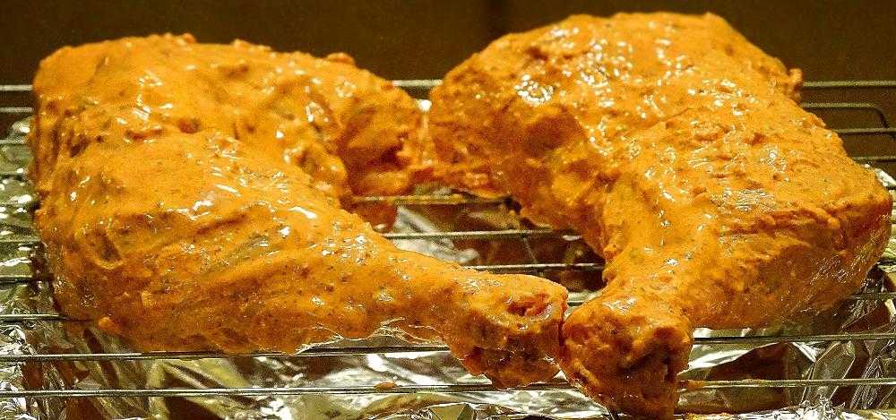
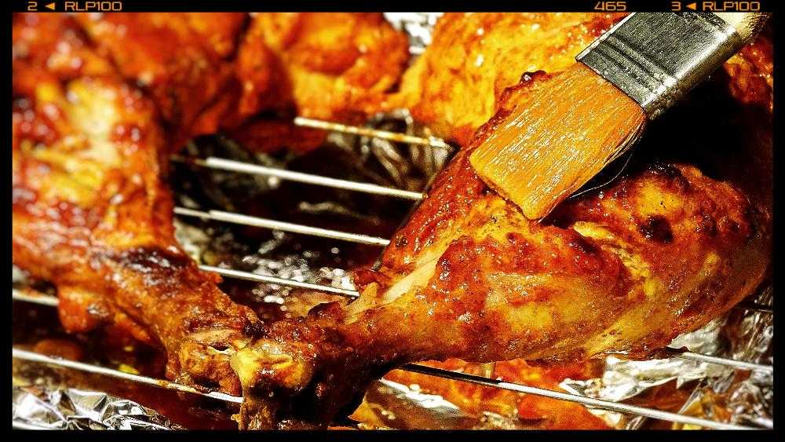
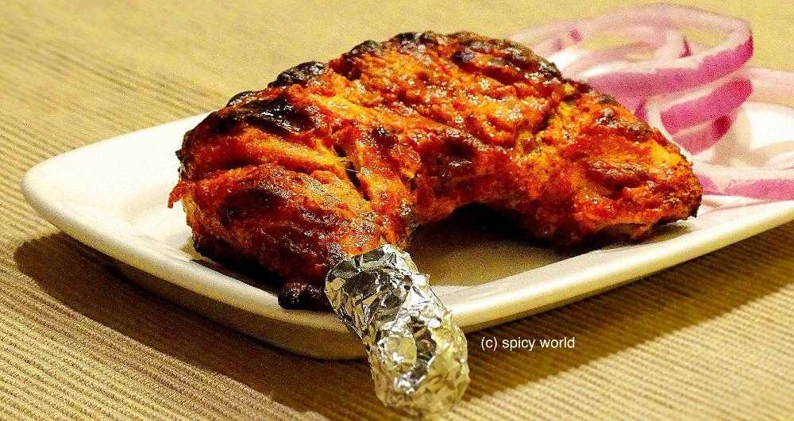

Simple and Easy Recipes
Tandoori Chicken
© 2016 Spicy World, Published on: Nov 16, 2015
This dish dont need any explanation. Its very popular in India and nowadays all over the world. There was a rumor that without "tandoor/oven" you cannot make tandoori. But believe me today I am sharing "oven method and gas method" of making tandoori chicken. 'Tandoor' means oven made with clay and the heat comes from charcoal. In restaurants the actual tandoor flavour comes when juices of chicken drops on the charcoal, it creats a nice smokey flavour. You will fall in love with this dish. Please give it a try at your home and prove the rumor wrong.

Ingredients
- 2 Chicken leg pieces.
- 6 Teaspoons hung curd.
- Salt.
- 2 Teaspoons fresh ginger and garlic paste.
- 4 Teaspoons mustard oil.
- 5 Teaspoons store bought tandoori masala or 1 Teaspoon each (roasted cumin and coriander powder, red chili powder, black pepper powder, kashmiri mirch powder, garam masala powder, dry fenugreek leaf powder).
- half Teaspoon cornflour.
- Some butter for basting.

Steps
Initial Steps
Wash the chicken pieces and make some slits with sharp knife. Pat dry the chicken.
Now take a big bowl. Add mustard oil.
Then add red chili powder, kashmiri red chili powder and tandoori masala (or remaining all the above mentioned powder). Mix it and let it rest for 8 minutes. From this you will get nice red color.
After that put hung curd, cornflour and salt. Mix it very well. Cornflour will help to stick the marination on the chicken while baking.
Now add the chicken pieces. Massage the chicken pieces with masala very well with your hand. Cover the bowl and keep it in refrigerator overnight or atleast 4-5 hours.
Oven methodPreheat your oven at the highest temperature for 10 to 15 minutes.
Place the matinated chicken pieces on a grill pan and put in the oven for 25 minutes in 450F. Adjust the temperature as per your oven. Always place the tray on the upper rack.
Then bast some butter on the baked side. Turn the chicken pieces on other side and follow the same procedure.
To get the smokey flavour put the tray close to the fillaments for 3 minutes each side in highest temperature.
Turn off your oven and let it rest for another 5 minutes.
Before serving chicken tandoori, bast some more butter on top.
Gas methodTake a iron skillet / pan. Heat it very well.
Put very little oil and spread all over the hot pan.
Now put the chicken pieces in the hot pan. Dont overcrowd the pan.
Cook each side for 15-20 minutes in medium high flame. Bast some butter in between.
To get the smokey flavour turn your burner and hold the chicken pieces in direct flame each side for 1 minute.
Your chicken tandoori is ready ...
Sprinkle some lemon juice and enjoy this snack with mint chutney and onion rings.
")